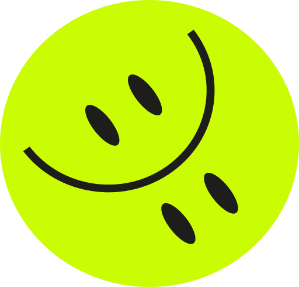

proto3D Print Desk
Everything on its way to the office printer, as a 3D preview you can spin around before it gets printed.
Want something printed?
- Add a task on the Order board 3D Print Requests (project Internal), or ask your Claude:
request a 3D print of … - A 3D preview shows up here and the link lands on your task. Approve it or ask for changes in a comment.
- It gets printed. You'll find it at the printer when the task moves to Klar.
Now printing (progress from the slicer's estimate)